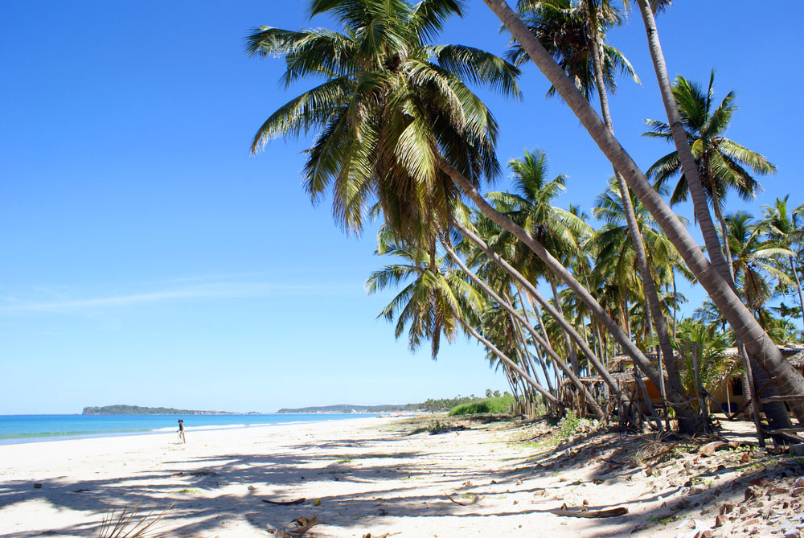

Top Five Beach Sides in Sri Lanka
The Asian island nation of Sri Lanka has a coastline fringed with numerous golden beaches. Wondering which of these sun-kissed sandy stretches to visit? Read on for our résumé of each of the country's coasts and to discover which beach is the one for you.One of the most essential Sri Lankan experiences is to spend some time lazing on an idyllic, tranquil beach. Struggling to choose between them? Here is a brief overview of the country's coastal regions followed by our pick of the best beaches in Sri Lanka.
1. Hiriketiya

On the south coast, the area around Dikwella is gradually becoming more popular with travelers looking to escape the increasing development further to the west. A string of relatively unspoiled beaches dot the coast here, most notably the stunning little horseshoe bay at Hiriketiya, which is backed by a small selection of great places to stay.Development is happening gradually and there is now a reasonable selection of casual hotels and guesthouses. The area is also developing a reputation as a center for whale-watching.
2. Bentota
One of the finest stretches of sand on the west coast, this beach runs south from magnificent Bentota lagoon and is lined with a string of alluring hotels. The southern end of the beach is home to some of the most appealing upmarket accommodation along this coastline, with a number of chic boutique hotels nestled amongst the palm trees. Bentota is also Sri Lanka's water sports hub. Behind the beach, the calm waters of the lagoon are perfect for kayaking and jet-skiing, while boat trips up the river to explore the mangroves.
3. Arugam Bay

Towards the southern end of the east coast, the village of Arugam Bay is a popular destination with independent travelers drawn by the charms of its beautiful, palm-fringed beach. Surfers originally put the village on the map by visiting to ride what are widely thought to be some of the best waves in Sri Lanka. The beach continues to attract plenty of surfers, but its laid-back vibe and offbeat charm provide wide-ranging appeal. The local community have strongly and successfully resisted the development of major hotels.
4. Mirissa
On the south coast, the fine sands of Mirissa Beach are backed by palm trees, while its clear waters and lively waves make it ideal for both swimming and surfing. A cluster of hotels and guesthouses offer a variety of accommodation choices nearby. Development here has been driven by Mirissa’s emergence as the whale-watching capital of Sri Lanka. Numerous whales can frequently be spotted reasonably close to the shoreline and multiple tour operators based in the village offer boat trips to see them during the season.
5. Uppuveli
Just north of Trincomalee on the east coast, the sleepy village of Uppuveli is a great option if you want a beautiful beach well off the beaten track. Proximity to the former civil war zone means that this seemingly endless swathe of soft white sand lining the coast remains remarkably unspoiled. Development is happening gradually and there is now a reasonable selection of casual hotels and guesthouses. The area is also developing a reputation as a center for whale-watching and diving.